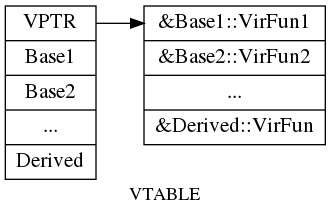

继承的基本知识
- 在继承中，每个类控制它自己的成员初始化过程，在重载操作符时，每个类调用自己的操作符对自己的成员操作；每个控制自己的友元
- 如果基类定义了一个静态成员，则在整个继承体系中只有一个该成员的定义
- 派生类的声明不包含继承列表
- 基类必须时完整定义的，不能只声明
- 关键字
final:写在类名后可以用来防止继承；写在虚函数所有修饰符之后可以防止被派生类重载。 - 关键字
override:只能用于虚函数，作用是明确告诉编译器需要重载该虚函数，让编译器执行类型检查 using声明可以改变名字的访问级别，也可以在派生类中让被隐藏的基类中的名字可见- 每一个派生类对象都包含一个完整的基类部分，基类部分与派生类部分不一定连续存储
- 静态类型：在编译时总是已知的，是变量声明时的类型或表达式生成的类型
- 动态类型：变量或表达式表示的内存中的对象的类型，直到运行时才可知
- 只有在表达式或变量为引用或指针时，动态类型才有可能与静态类型不一样
- 一个对象的接口由其静态类型决定
- 通常如果我们不使用某个函数可以不对它定义，当我们必须为每一个虚函数提供定义，因为虚函数执行的是晚绑定，编译器并不知道到底哪个虚函数被调用
- 晚绑定只有在基类指针\引用调用虚函数时才会发生
- 如果虚函数使用默认实参，那么基类和派生类中定义的默认实参最好一致，否则由本次调用的静态类型决定其实参值
- 确定应当使用组合还是继承，最清楚的方法之一就是询问是否需要向上类型转换
- 在构造函数和析构函数中，虚机制无效，即在这两个函数内调用虚函数，则只能调用本地版本
- 每一个包含虚函数的类都有一个VTABLE,该类的每个对象都有一个VPTR,VPTR 在创建对象时就设置好指向本类的VTABLE
访问控制与继承
基类成员在派生类中的可访问性
派生类的成员和友元可以访问基类中的 public protected 成员，不可以访问其 private 成员；派生类的成员函数和友元函数只能访问派生类对象中的基类部分的受保护成员，对于普通的基类对象中的成员不具有访问特权。
派生类中基类成员的可访问性
派生类中继承来的成员的访问权限受到两个因素的影响：1.在基类中的访问说明符；2. 在派生列表中的访问说明符。 派生访问说明符可以控制基类成员在派生类中的访问说明符：
- 公有继承时，基类的
public和protected成员的在派生类中的访问说明符不变； - 保护继承时，基类的
public和protected成员的在派生类中的访问说明符变为protected； - 私有继承时，基类的
public和protected成员的在派生类中的访问说明符变为private；
类的用户现在有三种：
- 普通用户
- 只能访问类的公有成员
- 类的实现
- 可以访问类的私有部分
- 派生类
- 可以访问类的公有和受保护部分
友元关系与继承
友元关系不能传递和继承，这种关系只对做出声明的类有效。友元可以访问一个类的所有成员。 如下面的例子，Frd是Base 的友元，则Frd 就可以访问Base 的所有成员，甚至包括其派生类对象中的Base 部分的成员。 每个类控制各自成员的访问权限。
1: 2: #include <iostream> 3: class Frd; 4: class Base 5: { 6: public: 7: friend class Frd; 8: Base()=default; 9: virtual ~Base()=default; 10: protected: 11: int m_prot=0; 12: private: 13: int m_priv=0; 14: }; 15: class Derived:public Base 16: { 17: public: 18: Derived()=default; 19: virtual ~Derived()=default; 20: private: 21: double m_d=1.0; 22: }; 23: 24: class Frd 25: { 26: public: 27: Frd()=default; 28: virtual ~Frd()=default; 29: int fun(const Base&b){return b.m_priv;} 30: int fun1(const Derived&d){return d.m_priv;} // 友元可以访问派生类中基类的部分 31: 32: }; 33: 34: int main(int argc, char *argv[]) 35: { 36: Base b; 37: Derived d; 38: Frd f; 39: std::cout << f.fun(b)<<'\n'; 40: std::cout << f.fun1(d)<<'\n'; 41: 42: return 0; 43: } 44:
0 0
改变个别成员的可访问性
如果要改变派生类中继承的某个名字的访问权限，通过使用 using 声明可以实现。
下例中，在派生类中本该是 private 的 size() 和 n,被分别改成了 public 和 protected :
1: 2: class Base 3: { 4: public: 5: Base(){}; 6: virtual ~Base(){}; 7: int size()const{return n;} 8: protected: 9: int n; 10: }; 11: 12: class Derived : private Base 13: { 14: public: 15: Derived(){}; 16: virtual ~Derived(){}; 17: using Base::size; 18: protected: 19: using Base::n; 20: }; 21: 22: int main(int argc, char *argv[]) 23: { 24: Derived d; 25: d.size(); 26: return 0; 27: }
派生类只能为那些它可以访问的名字提供 using 声明
继承中的作用域
每个类定义自己的作用域，在这个作用域内我们定义类的成员。当存在继承关系时，派生类作用域嵌套在其基类作用域内。如果一个名字在派生类作用域中找不到，编译器会在外层的基类作用域中寻找。
在编译期进行名字查找
一个对象、指针或引用的静态类型决定了它们可以调用哪些成员函数，即使静态类型与动态类型不一致（使用基类指针和引用时会发生这种情况），但我们能使用哪些成员仍然由静态类型决定。
名字冲突与继承
和其它作用域一样，派生类也能重用定义在其直接基类或间接基类中的名字，此时定义在内层作用域（派生类）的名字会隐藏定义在外层作用域（基类）的名字。如果要使用外层作用域的名字，应该通过作用域运算符（::）解析。
名字查找先于类型检查
声明在内层作用域的函数并不会重载声明在外层作用域的函数，因此，如果派生类的成员与基类的某个成员同名，则派生类将在其作用域内隐藏该基类成员及其重载的一系列函数，即使派生类成员与基类成员的形参列表不一致。
1: 2: #include <iostream> 3: class Base 4: { 5: public: 6: Base(){}; 7: virtual ~Base(){}; 8: void fun(int i){std::cout << i << "\n";} 9: void fun(double d){std::cout << d << "\n";} 10: }; 11: class Derived:public Base 12: { 13: public: 14: Derived(){}; 15: virtual ~Derived(){}; 16: //隐藏了基类中的两个fun 函数 17: using Base::fun; 18: void fun(){std::cout << "This is Derived\n";} 19: }; 20: int main(int argc, char *argv[]) 21: { 22: Derived d; 23: // d.fun(0); //Error:fun(int) and fun(double) are hidden by fun() 24: d.Base::fun(0); //OK 25: 26: Base*b=&d; 27: b->fun(8.908); //b 的静态类型是Base, 只能调用Base 中的两个fun 函数 28: return 0; 29: } 30:
0 8.908
综上，在继承体系中，假定我们在调用p->mem()(或者obj.mem()),编译期依次执行下面四个步骤：
- 首先确定p(obj)的静态类型。
- 在p(obj)的静态类型对应的类中查找mem,如果找不到，则依次在直接基类和间接基类中查找，如果找遍了该类和所有基类都找不到，则编译器报错
- 一旦找到了mem,就进行常规的类型检查（比如参数检查）以确认对于当前找到的mem,本次调用是否合法
- 如果合法，则编译器根据调用的是否虚函数而产生不同代码：
- 如果是虚函数并且是通过指针或引用进行的调用，则编译器产生的代码将在运行时确定到底运行该函数的哪个版本，依据是对象的动态类型
- 如果不是虚函数，或者通过对象调用，则编译器产生一个常规的函数调用。
重载基类函数成员
和其它函数一样，成员函数无论是否是虚函数都能被重载，通过前面的学习知道，如果简单的在派生类中添加重载的版本，那么基类中的同名函数会倍隐藏，那么一个办法就是把基类中的每个重载版本在派生类中重新写一遍，这是非常麻烦的，另一个解决办法就是提供一条 using 声明，指定一个函数名字即可，不必指定形参列表，这样就可以无需覆盖基类中的每一个重载版本了，比如上面那个例子只需在类 Derived 中加一句
using Base::fun
就可以让 Base 中的两个fun 函数在Derived 中可见了，从而让语句 d.fun(0) 合法。
构造函数与拷贝控制
默认情况下，派生类可以从基类继承所有的数据成员和除了构造函数、析构函数、赋值操作符以外的所有成员函数。
- 如果基类中 default constructor,copy constructor,operator=,destructor 是被删除或不可访问的（private），则派生类中对应的成员也是被删除的，因为编译器不能使用基类成员执行派生类对象基类部分的构造，拷贝和销毁操作
- 如果基类析构函数是删除的或不可访问，则派生类中合成的默认和拷贝构造函数将是被删除的，因为编译器无法销毁派生类对象的基类部分
- 编译器不会合成一个删除的移动操作
多态与虚函数
观察下面一段代码
1: 2: class Base 3: { 4: public: 5: Base(){}; 6: ~Base(){std::cout << "Base::~Base\n";}; 7: void Test(){std::cout << "Base::Test\n";} 8: }; 9: class Derived:public Base 10: { 11: public: 12: Derived(){}; 13: ~Derived(){std::cout << "Derived::~Derived\n";}; 14: void Test(){std::cout << "Derived::Test\n";} 15: }; 16: void fun(Base&b) 17: { 18: b.Test(); 19: } 20: int main(int argc, char *argv[]) 21: { 22: Derived d; 23: fun(d); 24: std::cout << "------------------------------\n"; 25: Base*pb=new Derived; 26: delete pb; 27: return 0; 28: } 29:
Base::Test ------------------------------ Base::~Base Derived::~Derived Base::~Base
有以下2个问题：
- 我们传给fun的参数是Derived 类型，为甚么运行的函数是Base 中定义的版本？
- 当我们pb 指向的是一个Derived 类型，为甚么在delete 时，只运行了Base 中的析构函数？
这是因为b 和pb 的静态类型都是Base,而且在继承体系中都是普通函数，所以它们只能在Base 类的作用域内查找名字，一旦找到并进行类型检查，如果调用正确，那么就执行Base 中的函数，
这两个问题涉及到同一个概念：虚函数。虚函数是C++实现多态的关键，它与普通成员函数的不同在于，普通函数执行的是早绑定，即在编译时期就能确定执行哪个版本，虚函数执行的是晚绑定，需要在程序运行期间确定函数版本。实现晚绑定的关键VTABLE,VPTR.
编译器为每个包含虚函数的类生成一个VTABLE,里面保存了该类所有虚函数的地址（如果没有重载基类版本就保存基类中相应虚函数的地址）；在创建对象时，在构造函数(包括拷贝构造函数)中秘密的完成了VPTR的初始化，每个类的构造函数负责将VPTR指向本类的VTABLE,所以在从基类到派生类的构造函数依次构建完自己的数据成员以后，对象的VPTR最终也完成了初始化。
如果想要实现多态必须通过基类地址来访问对象，因为派生类中包含基类中的所有数据，所以通过地址访问对象比直接用实例对象要灵活得多。通过基类地址访问得对象可以是基类，也可以是其派生类，区别只是它们在内存中占用得空间大小不同。

以上是一个派生类对象的内存模型示意图，关于这个示意图，有以下几点说明：
- 派生类对象中基类的数据与派生类中的数据成员不一定连续存储
- 每一个类都有一个自己的VTABLE,每一个类的对象中都保存一个VPTR 指向自己类的VTABLE
- 派生类VTABLE 中的函数地址的排序与基类一致，如果派生类中新定义了虚函数，则添加在派生类的VTABLE 的末尾，不过新添加的虚函数无法被基类指针调用。
在汇编下普通函数、普通成员函数与虚函数调用的区别
普通函数是直接通过 call 函数的绝对地址来实现函数调用，函数参数从右至左依次压入栈；普通成员函数基本与前者无异，除了多一次向栈压入 this 指针，通常是对象的地址，this 指针是隐藏的第一个参数，所以它最后入栈；虚函数的调用不同于前两者，区别在于不是直接 call 函数的地址： this 入栈后将第一个字长（VPTR）存入寄存器中，因为解引用VPTR 可以获得VTABLE 中第一个虚函数的地址，其余虚函数地址可以累加得到，因此调用虚函数是 call (*VPTR+n) ,n 是虚函数在VTABLE 中的位置。由此可见，虚函数虽然提供了多态性，同时也带来时间和空间上的开销。